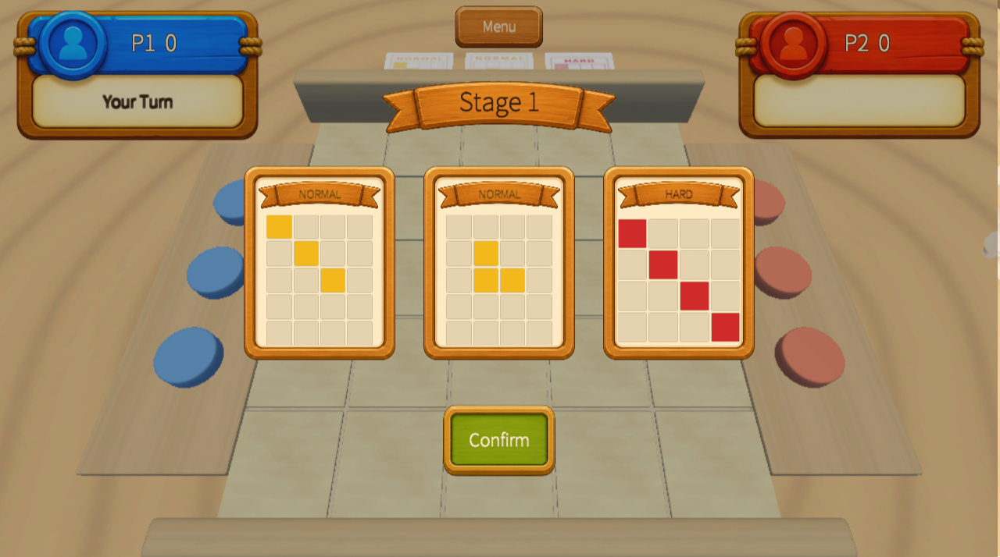
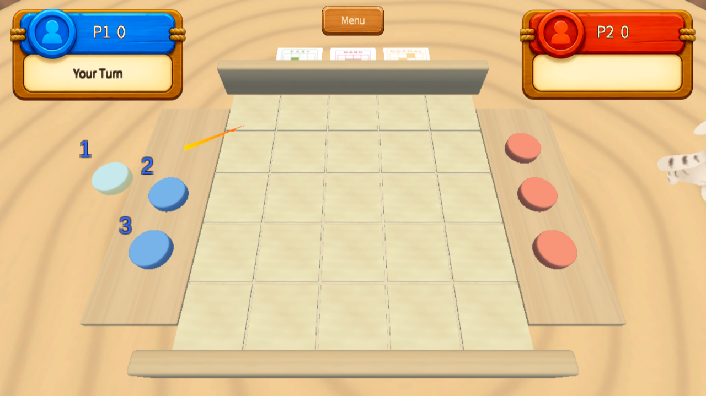
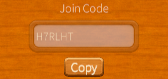
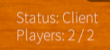
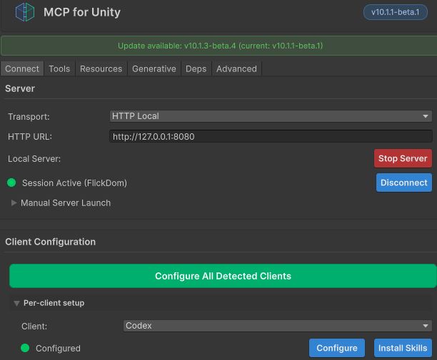

목표
3개의 디스크로 보드 칸을 점령하고 카드 패턴을 완성합니다.
FlickDom / PAGE 02

3개의 디스크로 보드 칸을 점령하고 카드 패턴을 완성합니다.

디스크를 선택한 뒤 드래그 방향과 힘으로 발사해 다음 턴 전략을 만듭니다.

Host가 방을 생성하고 Join Code를 공유하면 Client가 같은 방에 접속합니다.

Host / Client 역할 확인

호스트 코드로 같은 방 접속

접속 후 역할 상태 확인
최신 코드 공유 후 시작
Unity MCP, Blender MCP, Substance MCP와 AI 사운드 제작 흐름을 함께 활용해 리소스 정리와 구현 반복 속도를 높였습니다.
AI 활용 능력 / PAGE 01
Unity Editor와 AI 에이전트를 연결해 씬, 오브젝트, 컴포넌트 작업을 빠르게 확인하고 반복했습니다.

보드, 디스크, 소품 리소스의 비율과 배치 목적을 정리하며 3D 제작 과정을 보조했습니다.

FlickDom / PAGE 03
5×5 Board 점령 Logic, Cell 선택·배치 후보 처리, Card Pattern Matching, Stage 진행, Monkey 조작·Camera 흐름, Main Menu를 구현했습니다.
초기 Host/Client 동기화 기반 위에서 FSM 기반 턴 흐름과 멀티플레이 상태 전환을 연결하고 Network 구조를 수정했습니다.
WebGL Build·배포 환경을 구성하고 실제 브라우저에서 접속, 게임 진행, 상태 동기화를 검증해 최종 Release까지 마무리했습니다.
팀의 초기 네트워크 기반 전체가 아니라, 그 위에서 직접 구현하거나 수정한 Board·Card Pattern·Stage·Turn FSM·Network 전환·WebGL 범위를 명확히 설명합니다.